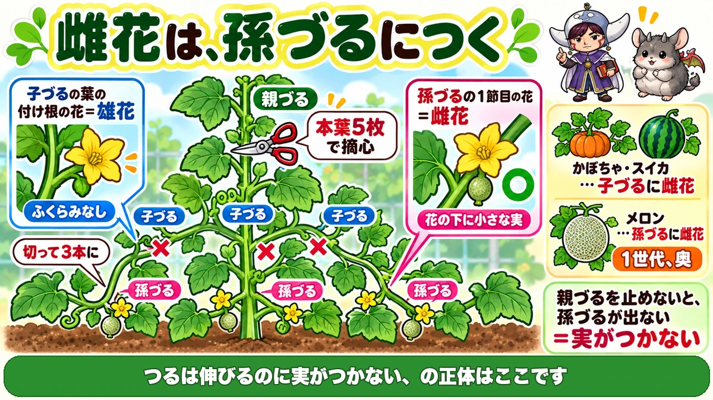
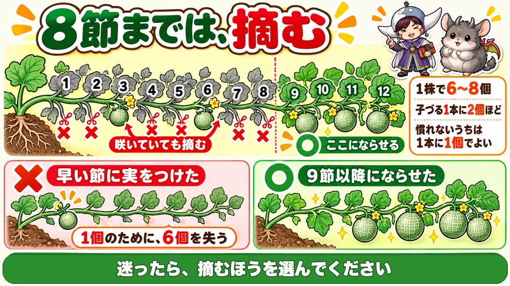
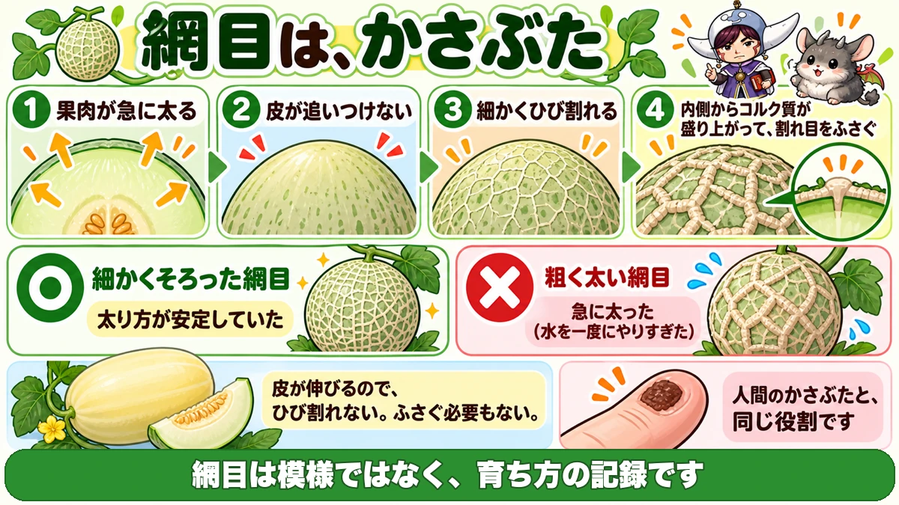

メロンの網目は、ひび割れの跡です🍈 実が急に太った証拠
🍈「つるは伸びるのに、実がつかない」
🍈「早くついた実を大事に育てたら、それ1個で終わった」
🍈「網目がほとんど出なかった」
どうも、8150（えいこう）です🌱 家庭菜園歴8年、理科の教員免許を持っていて、有機・無農薬で野菜を育てています。
前回は間引きでした。今日はメロンです。
メロンは★ウリ科のなかで、いちばん仕立てが特殊です。
きゅうり・かぼちゃ・スイカと同じつもりでやると、★実がつきません。
先に、この記事でいちばん言いたいことを言っておきますね。
★メロンの雌花は、孫づるにつきます。
だから★親づるを早く止めて、孫づるを出させます🍈
まず、メロンの基本データ
3つだけ押さえてください
- 科：ウリ科（きゅうり・かぼちゃ・スイカ・ズッキーニ・ゴーヤの仲間。同じ場所は2〜3年あける）
- タネまき：3〜4月（保温が要ります）
- 植え付け：5月／収穫：7〜8月
※時期は中間地（関東〜関西の平野部）が目安。寒い地域は少し遅らせ、暖かい地域は早めに。
家庭菜園なら、小玉から
いきなり大玉のマスクメロンを狙わなくていいです。
★「ころたん」のような小玉のネットメロンなら、育てやすいです。
★プランターでも作れます。この記事の話は、小玉を前提にしています。
★親・子・孫を、区別してください

つるには、3世代あります
まず言葉を整理します。
- ★親づる … 苗から最初に伸びる、1本の太いつる
- ★子づる … 親づるの葉の付け根から出るつる
- ★孫づる … 子づるの葉の付け根から出るつる
★雌花がつく場所が、違います
ここがメロンの特徴です。
- ★かぼちゃ・スイカ … 子づるに雌花がつく
- ★メロン … 孫づるに雌花がつく
★1世代、奥なんですね。
だから、親づるを止めます
孫づるを出すには、まず子づるが要ります。
子づるを出すには、★親づるを止めなければなりません。
★親づるは、本葉5枚で摘心してください。
★放っておくと親づるだけが伸び続けて、いつまでも孫づるが出ません。「つるは伸びるのに実がつかない」の正体は、たいていこれです。
子づるは、3本に
親づるを止めると、子づるが出てきます。
★4本でも5本でも出てきますが、3本に整理してください。
★余分なものは、根元から切ります。
★数を絞ったほうが、1本1本に力が回ります。
雄花と雌花の、見分け方
見分け方は簡単です。
- ★子づるの葉の付け根に咲いている花 … 雄花
- ★孫づるの1節目に咲いている花 … 雌花
★雌花は、花の下にもう小さなメロンがついています。ズッキーニと同じですね。
★8節までは、実をつけさせません

数えるのは、子づるの葉です
ここが今日いちばん実用的な話です。
★子づるの葉を、根元から1枚、2枚と数えてください。
★8枚目までの葉から出た孫づるは、摘みます。
★9枚目から先の孫づるに、実をつけさせます。
雌花が咲いていても、摘みます
これがつらいところです。
★8節までの孫づるには、もう雌花が咲いていることがあります。
小さなメロンがついていると、★どうしても残したくなりますよね。
★それでも摘んでください。
なぜ摘むのか
理由は、株の体力です。
★株がまだ小さいうちに実をつけると、そこに養分を全部持っていかれます。
結果どうなるか。
- ★その1個も、大きく育たない
- ★そのあと、新しい実がつかなくなる
★1個のために、6個を失うことになります。
勢いが弱い株ほど、厳しく
判断に迷ったときの目安です。
- ★勢いがとてもいい株 … 少し早い節でも大丈夫なことがあります
- ★普通の株・つるが暴れている株 … ★8節まではきっちり摘む
★迷ったら、摘むほうを選んでください。
全体で、6〜8個
つける数の目安です。
- ★1株で6〜8個
- ★子づる1本につき、2個ほど
★慣れないうちは、子づる1本に1個でもいいと思います。★確実に甘くなります。
人工授粉は、花粉を見てから
「午前10時まで」は、目安です
よく★「授粉は午前10時まで」と言われます。
これは間違いではありませんが、★時計だけを見ないでください。
花粉が出る時間は、動きます
実際はこうです。
- ★暑い朝 … 6時ごろにはもう花粉が出ています
- ★曇りの日 … 午後になってから出はじめることもあります
★見るべきなのは時刻ではなく、花粉が出ているかどうかです。
★雄花をのぞいて、粉がついているかを確認してから始めてください。
やり方
- ★雄花を摘んで、花びらをむく
- ★雌花の中心に、軽くこすりつける
★メロンの花は小さいので、これがやりにくいことがあります。
その場合は★筆で花粉を取って、雌花に塗ってください。ズッキーニと同じやり方です。
追肥は、通路側に
追肥の場所にもコツがあります。
★マルチの外、通路側にぼかし肥をパラパラとまいてください。
★根はもう、そこまで伸びています。株元にまいても届きません。
学ぶ：網目は、かさぶたです🔬

あの模様は、何でしょう
メロンの網目。★あれは品種ごとの模様だと思っていませんか。
私もそう思っていました。★でも違います。
★あれは、ひび割れが治った跡です。
4段階で、できます
順番に見ていきます。
- ★中身（果肉）が、急に太りはじめる
- ★外側の皮が、その速さについていけない
- ★皮が、細かくひび割れる
- ★内側からコルク質が盛り上がって、割れ目をふさぐ
★この「ふさいだ線」が、そのまま残ったものが網目です。
つまり、かさぶたです
分かりやすく言えば、★かさぶたです。
人間がけがをしたとき、★かさぶたができて傷をふさぎますよね。
★メロンは、実の表面で同じことをしています。
★網目のあるメロンは、全身かさぶただらけということになります。
網目が細かいと、よい理由
ここから実用の話につながります。
★網目が細かくそろっている ＝ 太り方が安定していた
★網目が粗く、太い線になっている ＝ 急に太った
つまり★網目は、育ち方の記録なんですね。
水のやりすぎは、跡に出ます
だから、こうなります。
★水を一度にやりすぎると、実が急に太って、大きく割れます。
★その割れをふさぐので、線が太く、粗くなります。
★網目をきれいに出したいなら、水を急に増やさないことです。
網目のないメロンもあります
最後に、ひとつ補足を。
★マクワウリやプリンスメロンには、網目がありません。
★これは皮が伸びる性質だからです。ひび割れないので、ふさぐ必要もありません。
★網目のあるなしは、品種の「皮の伸び方」の違いなんですね。
スイカと並べると
前に、スイカの記事で★「苦味は種を守るため」「収穫日は積算温度で決まる」と書きました。
★メロンの網目も、同じように理由のある姿です。
★模様に見えていたものが、実は治った傷。畑で見る目が変わります☺️
まとめ
ここまで読んでくださって、ありがとうございます！
- ★メロンはウリ科。同じ場所は2〜3年あける
- ★家庭菜園なら小玉のネットメロンが作りやすい
- ★親づる・子づる・孫づるを区別する
- ★メロンの雌花は孫づるにつく（かぼちゃ・スイカは子づる）
- ★親づるは本葉5枚で摘心する
- ★子づるは3本に整理する
- ★子づるの葉の付け根の花が雄花
- ★孫づるの1節目の花が雌花
- ★子づるの8節目までの孫づるは摘む
- ★雌花が咲いていても摘む
- ★9節以降に実をつけさせる
- ★早くつけさせると、その1個も育たず、次もつかない
- ★1株で6〜8個、子づる1本に2個ほど
- ★慣れないうちは子づる1本に1個でよい
- ★人工授粉は時刻ではなく、花粉が出ているかで判断する
- ★花が小さいので筆を使ってもよい
- ★追肥はマルチの外、通路側に
- ★網目は、ひび割れをふさいだ跡（かさぶた）
- ★網目が細かいほど、太り方が安定していた証拠
- ★水を急に増やすと、網目が粗くなる
全部やろうとしなくて大丈夫です。まずは★親づるを本葉5枚で止めてください。ここを間違えなければ、あとは何とかなります🍈
次回からは、また季節に合わせた話に戻ります🌱
ミニ温室
メロンは温度が要ります。育苗のはじめだけでも囲っておくと失敗が減ります。
![[商品価格に関しましては、リンクが作成された時点と現時点で情報が変更されている場合がございます。]](https://hbb.afl.rakuten.co.jp/hgb/56e737da.59472026.56e737db.311c7b4f/?me_id=1280948&item_id=10022268&pc=https%3A%2F%2Fthumbnail.image.rakuten.co.jp%2F%400_mall%2Fweiwei%2Fcabinet%2Fshouhin-image03%2Faah004-r.jpg%3F_ex%3D240x240&s=240x240&t=picttext "[商品価格に関しましては、リンクが作成された時点と現時点で情報が変更されている場合がございます。]")

敷きわら
実が土に触れると傷みます。玉直しのときにも下に敷いておきます。
![[商品価格に関しましては、リンクが作成された時点と現時点で情報が変更されている場合がございます。]](https://hbb.afl.rakuten.co.jp/hgb/56bc2fb2.ff40a6e6.56bc2fb3.618f6a70/?me_id=1257026&item_id=10000211&pc=https%3A%2F%2Fthumbnail.image.rakuten.co.jp%2F%400_mall%2Fsharuka%2Fcabinet%2F09042254%2Fimgrc0081094692.jpg%3F_ex%3D240x240&s=240x240&t=picttext "[商品価格に関しましては、リンクが作成された時点と現時点で情報が変更されている場合がございます。]")
屈折式糖度計
穫りどきを数字で決められます。子どもと一緒に測ると盛り上がります。
![[商品価格に関しましては、リンクが作成された時点と現時点で情報が変更されている場合がございます。]](https://hbb.afl.rakuten.co.jp/hgb/56d214ed.82e55a39.56d214ee.0964bf9a/?me_id=1335769&item_id=10000348&pc=https%3A%2F%2Fthumbnail.image.rakuten.co.jp%2F%400_mall%2Fgood-item%2Fcabinet%2F06374369%2Fcompass1553596495.jpg%3F_ex%3D240x240&s=240x240&t=picttext "[商品価格に関しましては、リンクが作成された時点と現時点で情報が変更されている場合がございます。]")
あわせて読みたい